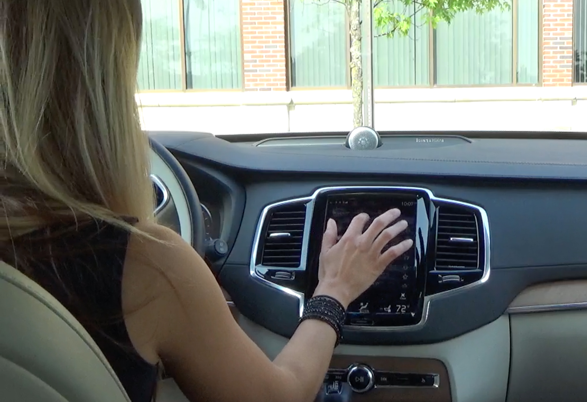

Design

The survey was designed to conduct a deep dive into one type of system
Implementation
Users were recorded by the survey team. Each video was reviewed for gestures and additional feedback not captured on the survey.
Results

Survey results were used to educate customers, create use cases and enhance the advanced development ideation process.
I designed and conducted this survey to look for improvements on a well-received production infotainment system. This survey involved users going through a list of tasks while the vehicle was stopped and in motion, followed by providing written feedback. Each user was also filmed for review.
An additional takeaway from this survey was how the industry looks at vehicle usability. Many in the industry talk of the ‘rental car’ usability standard, where a user should be able to use a new vehicle without much learning curve. This survey showed the implication that new technology has on that standard.